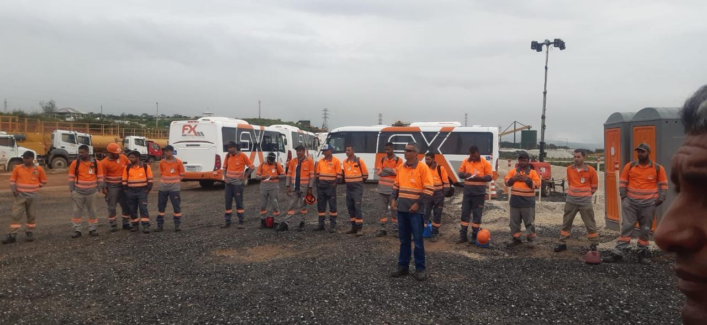

Por quê? A resposta vem nos próximos stories.
O operador senta do lado esquerdo, lá no alto. Do lado direito, uma área enorme some da visão dele.

Conta na caixa abaixo. As respostas voltam aqui nos stories.